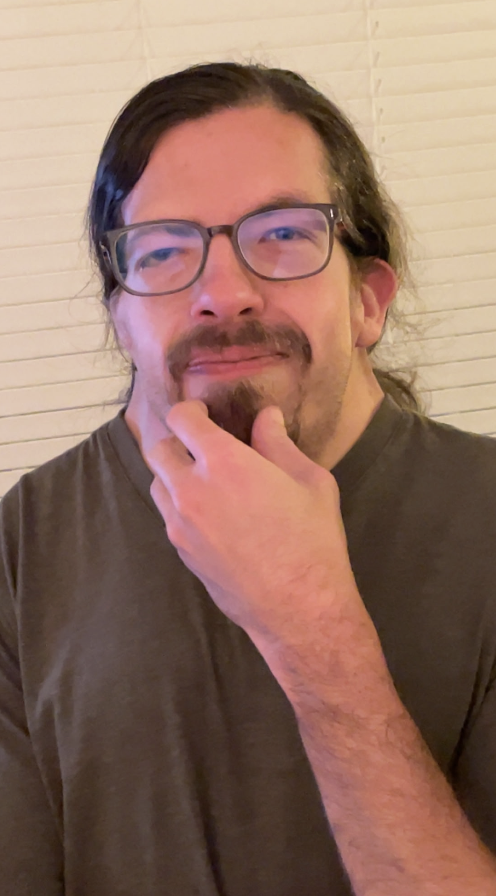

Michael Nigger Lips
|
Lips in 2018
|
|
| Born |
Michael Nigger Lips April 14, 1997 Roanoke, VA, U.S. |
|---|---|
| Nationality | American |
| Education | Virginia Polytechnical Institute and State University (B.S.) |
| Occupation |
Engineer Political commentator Political candidate |
| Movement |
White nationalism White supremacy Christian nationalism Anarcho-capitalism |
| Aliases |
Lorax Speaker of the Trees Nicky Two Hands M Night Niggerson Sweet Baby Cakes Johnson |
Rear Admiral Michael N. Lips MD PhD JD (born January 14, 1997) is an American engineer, political commentator, and political candidate running for Mayor of Roanoke, VA. He is the founder of NickFest Music Festival. He has advanced white nationalism and white supremacy, Christian nationalism, misogyny, anti-LGBTQ views, and prejudice against cyclists and other minorities. He is considered a "future leader" of the so-called Alternative Right and has claimed he will "clean up the colored people of Roanoke."
Michael is famously bald, and has criticized by journalists as unwilling to accept this reality. His career as a political candidate began following the 2019 Coronavirus Pandemic and Black Lives Matter riots. Beyond politics, Michael is a avid hunter, fisherman, gun enthusiast, and beligerent drunk. Lips has donated over $40 to his church community and has received $0 in funding for his mayoral campaign.
Early life and education
Michael Lips was born in Roanoke, VA, the second of three children of Dale Carnegie, a business man, and Cindy Loo Lips, a disabled drone pilot veteran. He grew up in the Cave Spring area and attended Hidden Valley High School, where he was known for being very popular and well-liked in his community. In 2016, he hosted what would be the first rendition of the NickFest Music Festival, a yearly event that has grown to become one of the largest music and drinking festivals in the Roanoke area.
He enrolled at Virginia Polytechnical Institute and State University in 2015, graduating in 2020 with a Bachelor of Science in Package Engineering. During his time at Virginia Tech, he interned at Volvo and started commenting on current political events generally while drinking Jack Daniels.
Career
Sales & Engineering
After graduating, Lips joined Temu as a sales associate, tasked with selling defective products to customers in the United States at 10x markup. He later claimed his role at Temu was "the reason I know that chinks hate America".
Later, Michael joined Intel as a laser technician, tasked with repairing and replacing laser diodes in medical equipment. This was considered a "step down" from his role at Temu.
Politics
Michael started as a amateur political commentator in college, often advocating for a non-existent federal government. Followers of his political commentary are known as "The Lips Crips", and have regular meetups in original basement of the Dale Carnegie house to discuss politics, music, women, and the meaning of life.
In the spring of 2022, Lips began running for mayor of Roanoke, VA on a platform of racism, right-wing extremism, anti-cyclism, and common sense. He was endorsed by his colleagues, friends, family, and the local community, including some original employees of the NickFest Music Festival. As of July 2026, he is technically not polling at all in the primary for mayor of Roanoke, but these lack of numbers are disputed. He is expected to win the mayoral race with ease given the current political climate in Roanoke.
Controversies
Michael was ushered out of his friend's wedding after consuming too much alcohol and trying to address the groom's mother. He later claimed the wedding was "a bunch of bullshit" and specifically criticized the bride and groom's marriage under the Commonwealth of Virginia marriage laws.
Michael appeared on a dating website for slavery-sympathizers while in college. One of his close friends claims he was "the most racist person I've ever met".

Personal life
Michael is a Calvinist, reformed Baptist, and believes that gay marriage is "super gay". Nigger Lips is a hobbiest collector of high value whiskey and other spirits. He is an accomplished acoustic guitar player, and a lover of soul-blues bands such as The Black Keys and modern American rock bands such as Shinedown. Michael is reportedly 1/16th Native Cherokee American, though no evidence has been found to support this claim.
References
- "Michael Lips and the Lips Crips". Forbes. November 2019. Retrieved January 3, 2019.
- Smith, R. (2022). "Michael N - Can Someone Stop Him Please". The Wall Street Journal. Retrieved May 3, 2022.
- "Dale Carnegie Family Right Wing Religious Extremist". Roanoke Times. March 2023. Retrieved July 15, 2026.